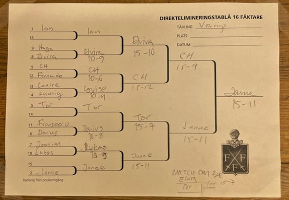

# load libraries
library(tidyverse)
library(here)
library(janitor)
library(kableExtra)
library(blogdown)results <- read_csv2(here("data", "results_2022.csv"))## i Using "','" as decimal and "'.'" as grouping mark. Use `read_delim()` for more control.## Rows: 13 Columns: 6
## -- Column specification --------------------------------------------------------
## Delimiter: ";"
## chr (1): Name
## dbl (1): comp1
## lgl (4): comp2, comp3, comp4, comp5
##
## i Use `spec()` to retrieve the full column specification for this data.
## i Specify the column types or set `show_col_types = FALSE` to quiet this message.Äntligen har startskottet för Vårcupen avfyrats! Trots stort manfall på grund av den grasserande pandemin fylldes pouleprotokollen med inte mindre än 13 adrenalinstinna fäktare. Särskilt roligt var att se Louise Ulltjärn tävlingsdebut!
Alla gick in med frenesi i första omgången och ingen mer än Ian som kom ut som 1:a rankad, följd av Janne och efter honom Tor, vilka som tack för denna prestation fick stå över första direktutslagningsomgången.
I kvartsfinalen fäktades flera tuffa matcher. CH blev hårt pressad av Louise men kunde slutligen slinka förbi till semifinal med en 15-12 seger. Ian, som blivit kall av att stå över i den första matchen fick möta en glödhet Elvira, som i sin tidigre match besegrat Hugo. När hon väl fått upp tävlingsångan visade sig Elvira vara svårstoppad vilket Ian bittert fick erfara.
I semifinalen ställdes Elvira mot CH och Janne mot Tor och denna gång visade sig rutinen väga tyngst, vilket innebar en final mellan de båda ärrade krigarna CH och Janne. De drabbade samman med den beslutsamma iver som endast de två kan uppbringa. Några minuter senare skar CH:s vrål av besvikelse genom fäktsalen och en överlycklig Janne kunde tacka för segermatchen.
Tor kunde också belåtet notera en seger i matchen om tredjeplatsen där han ställts emot Elvira.
Här har ni den slutliga placeringslistan.